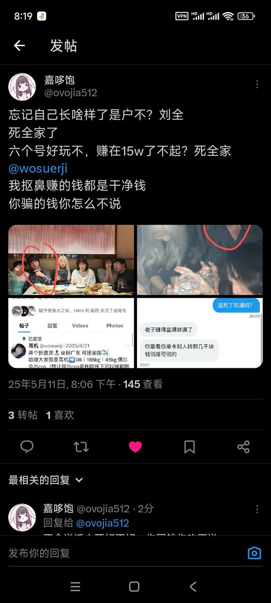
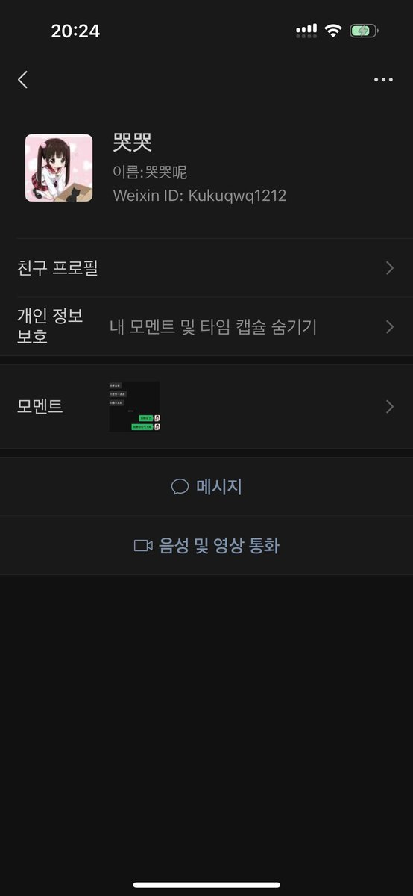
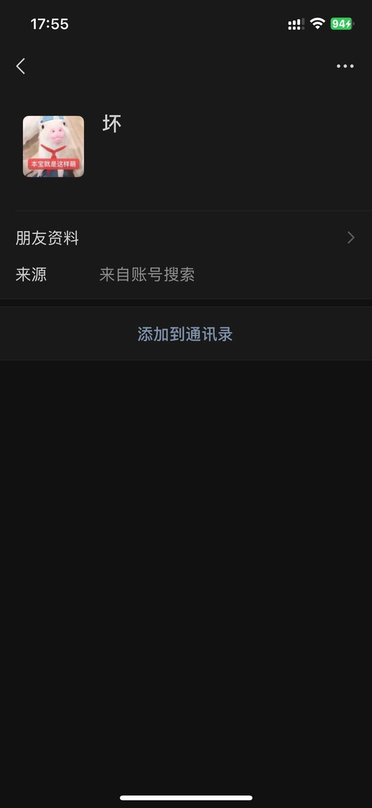

疑心病（神临版）
@yixinbing2026
RT @feiQwQ555: 骗子起号真TM容易，先来讲耳机，打电话和我说不是骗子反说小哭哭是皮下男，邀请他一起骗钱，还说哭哭威胁他给他开户了寄刀片，结果自己被开了也是男的，再来就是小哭哭和坏坏，你TM是不畜生，号不火了另起是吧之前小哭哭名的V号一改，就成坏坏了，在赚死后的棺材…



爱被那个小哭哭和坏坏骗就大胆约她线下吧
@feiQwQ555
骗子起号真TM容易，先来讲耳机，打电话和我说不是骗子反说小哭哭是皮下男，邀请他一起骗钱，还说哭哭威胁他给他开户了寄刀片，结果自己被开了也是男的，再来就是小哭哭和坏坏，你TM是不畜生，号不火了另起是吧之前小哭哭名的V号一改，就成坏坏了，在赚死后的棺材本是吗，@xiaokukuQwQ @Xhhooooo https://t.co/J7G0LmQHWg